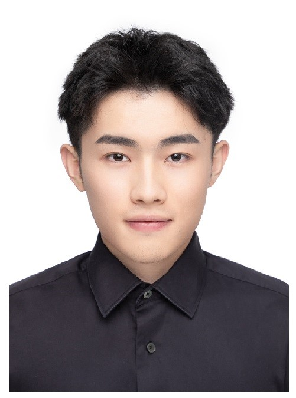

袁征 (Zheng Yuan)
|  | 硕士研究生,中共党员 |
关于我
我目前在北京邮电大学攻读硕士学位，师从张琳教授。 本人已于2021年6月从北京邮电大学 信息与通信工程学院获得学士学位。
我的研究兴趣主要包括: 深度强化学习, 智慧交通、自动驾驶、自动泊车等。
教育经历
 |
硕士 北京邮电大学 (2021.9 ~ )
|
|
|
本科 北京邮电大学 (2017.9 ~ 2021.7)
|
学术论文
T3OMVP: A Transformer-Based Time and Team Reinforcement Learning Scheme for Observation-Constrained Multi-Vehicle Pursuit in Urban Area
Zheng Yuan,Tianhao Wu,Qinwen Wang,Yiying Yang,Lei Li and Lin Zhang
Electronics, 2022.[PDF]
A Traffic-Aware Federated Imitation Learning Framework for Motion Control at Unsignalized Intersections with Internet of Vehicles
Tianhao Wu, Mingzhi Jiang, Yinhui Han, Zheng Yuan,Xinhang Li andLin Zhang
Electronics, 2021.
DP-YOLOv5: Computer Vision-Based Risk Behavior Detection in Power Grids
Zhe Wang, Yubo Zheng, Xinhang Li, Xikang Jiang, Zheng Yuan, Lei Li, Lin Zhang
Chinese Conference on Pattern Recognition and Computer Vision (PRCV), 2021.
比赛经历
- 2020年之江杯全球人工智能大赛无人车安全驾驶仿真赛 第一名
在自动驾驶汽车仿真软件中使用C++作为接口开发自动驾驶汽车规划、决策、控制算法，算法中包含行人检测、冲突车辆检测、跟车检测、变道检测以及相应决策下的全局路径规划和局部路径规划、此外包括车辆的横向控制MPC算法以及纵向控制算法PID控制
- 2021年北京市大学生工程训练训练竞赛无人驾驶虚拟仿真赛道 特等奖
在51SimOne仿真平台的基础上，搭建并使用MPC以及PID控制作为车辆横向控制和纵向控制器，能够完成包括20个单个案例以及1个连续场景下的安全行驶，其中包括信号灯检测、行人检测、过U型弯、变道超车、跟车行驶、紧急停车以及相应的城市连续场景
- 2022 年自动泊车轨迹规划比赛（Trajectory Planning Competition Automated Parking）第七名
比赛中搭建Hybrid A*、模型预测轨迹规划算法结合RS曲线完成非结构化场景下的自动泊车轨迹规划、其中考虑到了车辆的动力学约束以及避障约束、规划出一个时间最短的轨迹
- 2022 NeurIPS The Neural MMO Challenge 第四名
在由NeurIPS主办的MMO挑战赛中，设计PPO强化学习算法应用于8个智能体上，每局比赛与另外15个队伍的共120个智能体对抗，场景中包括补给品，可以使用道具攻击参与者，最后生存时间以及造成伤害加权最高的队伍获胜，比赛中针对单智能体强化学习的PPO算法添加稠密奖励对其训练，并使用规则类方法进行引导强化学习
项目经历
济南（北京邮电大学）工业互联网研究院（智能交通系统+人工智能）
参与面向城区环境的无信号灯车辆通行优化研究项目，使用深度强化学习方法 MADDPG 对单交叉路口和 多交叉路口的车辆通行模型进行优化、 使用 python 搭建多交叉口、多车道虚拟仿真环境